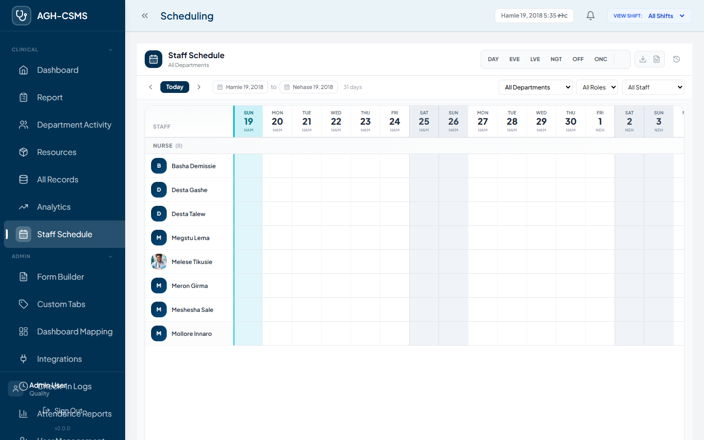
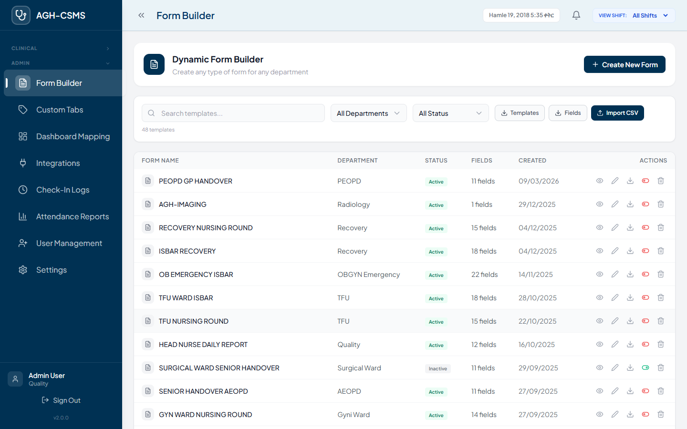
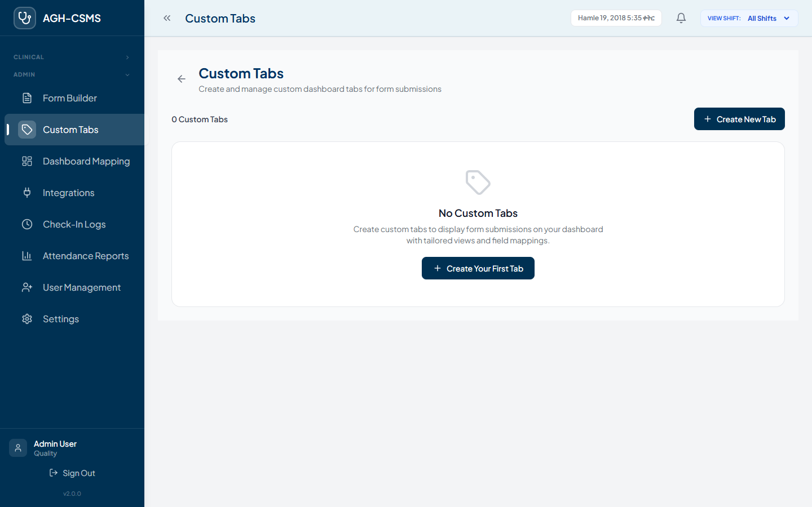
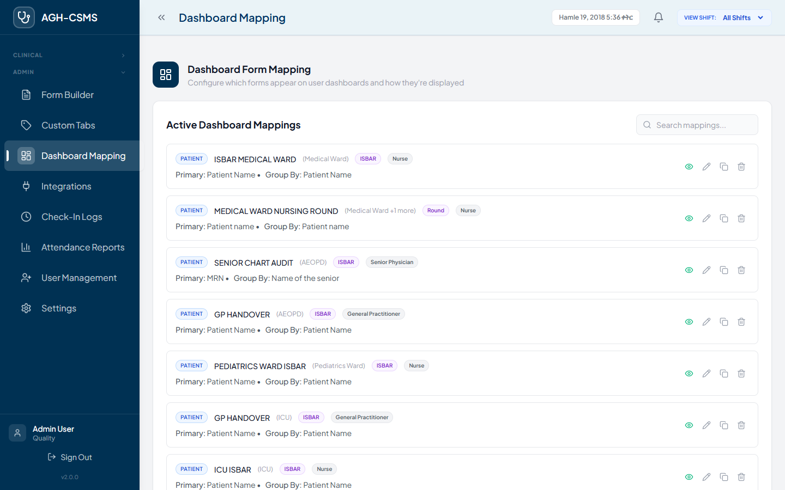
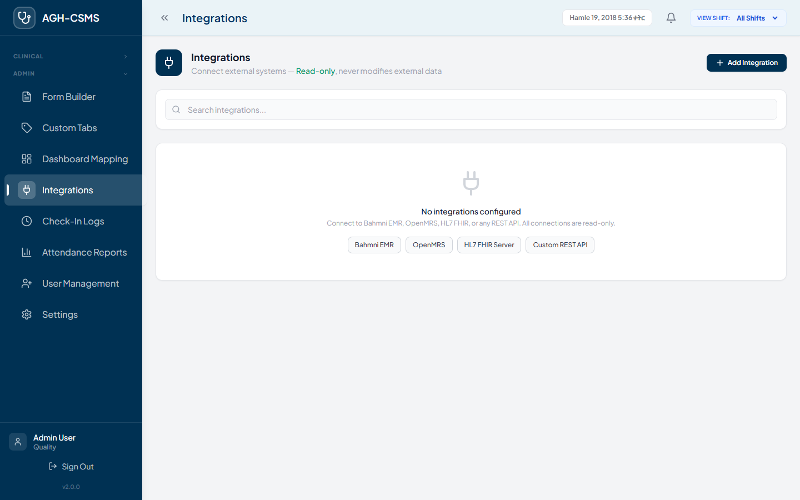
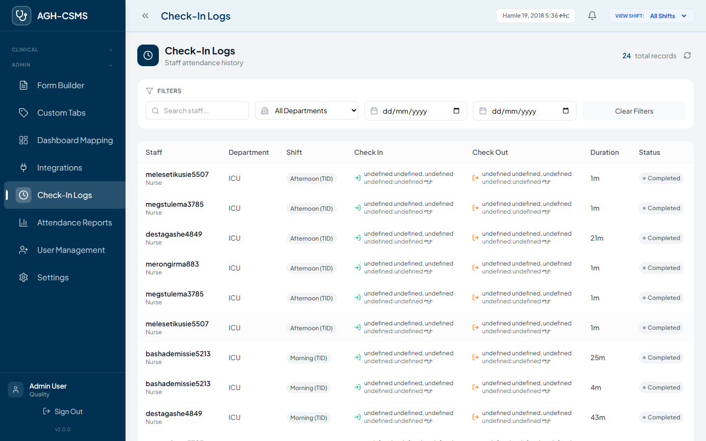
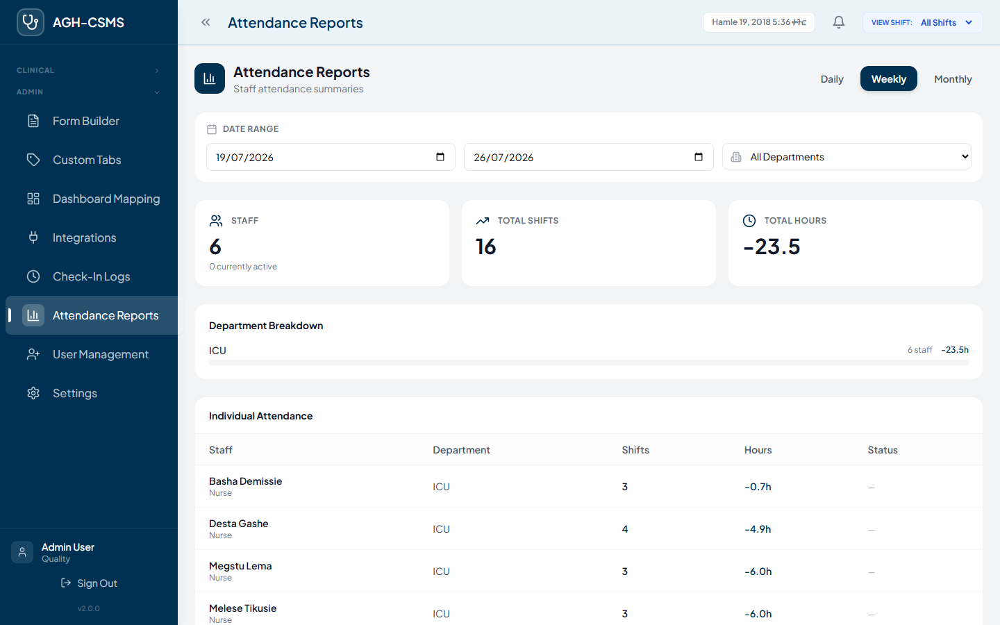
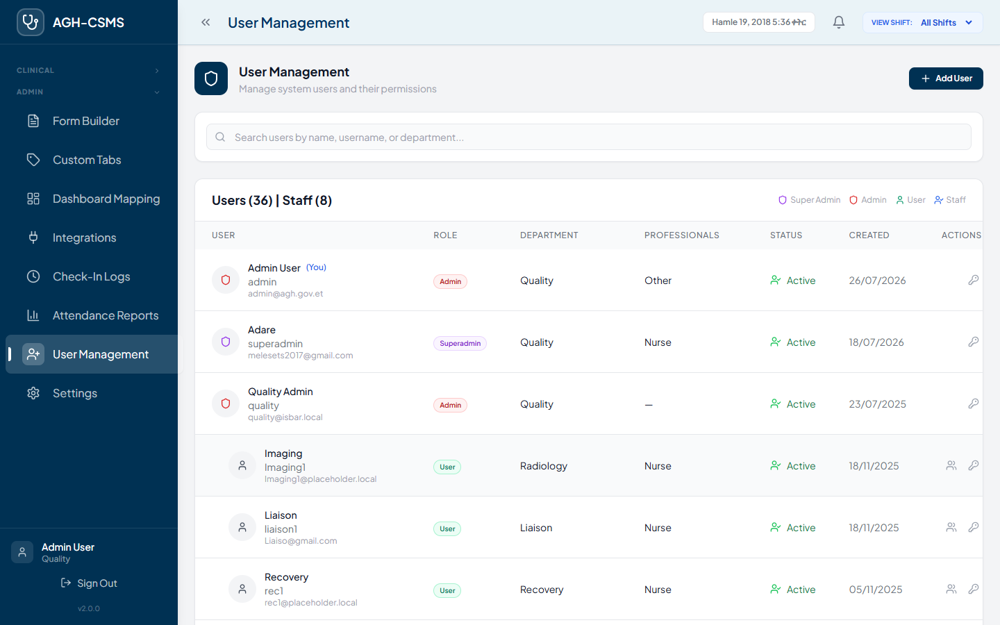
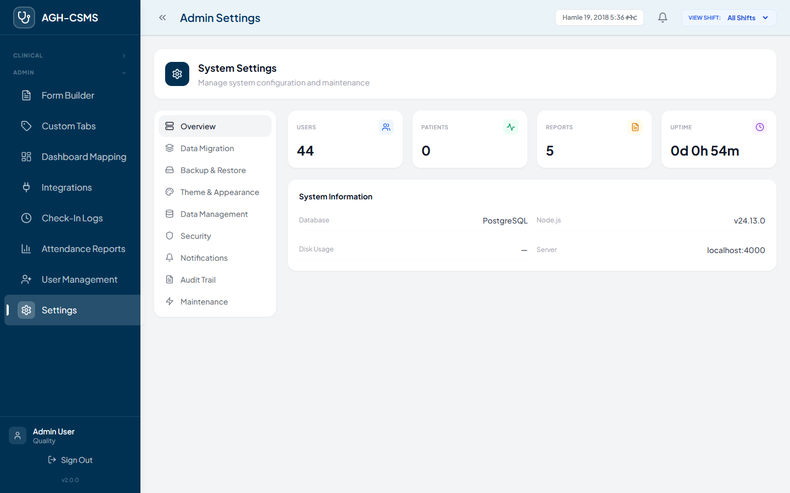

ISBAR Clinical Documentation System
Training Module for System Administrators, Department Heads, and Power Users
v2.0 • Built for Ethiopian Healthcare
Visual shift scheduling with drag-and-drop and export capabilities

View and manage staff assignments across Morning, Afternoon, and Night shifts. Click any cell to assign or update a shift. Use PNG/Excel export for distribution.
Visual drag-and-drop form designer for custom clinical templates

Select a template to edit or create new. Drag fields from the library into the canvas. Configure validation, options, and layout in the properties panel. Save and publish to make available for clinical staff.
Create and manage custom navigation tabs for department-specific workflows

Create additional navigation tabs for department-specific workflows. Each tab can link to a custom form, external URL, or embedded content. Tabs are stored locally and persist across sessions.
Configure which forms and data appear on the main dashboard

Map ISBAR forms and custom templates to dashboard cards. Control what clinical staff see when they log in — prioritize the most relevant information for each department.
Connect ISBAR with external systems, APIs, and third-party services

Connect ISBAR with hospital information systems, laboratory systems, and pharmacy databases. Configure API endpoints, authentication, and data sync intervals.
Complete audit trail of all staff check-in/out activity

Generate and export staff attendance summaries by department and period

Select department, date range, and shift type to generate attendance summaries. Export to PDF for HR records or Excel for further analysis. Track check-in compliance and identify coverage gaps.
Create, edit, and manage user accounts with role-based access control

System-wide configuration, hospital info, and application preferences

Configure hospital name, departments, shift times, and notification settings. Manage backup schedules, data retention policies, and system maintenance windows.
Four tiers of access ensuring data security and appropriate permissions
Enterprise-grade security protecting patient data and system integrity
4-digit PIN verification for staff check-in with bcrypt hashing. PINs are never stored in plain text.
Four-tier permission system ensures staff only see data relevant to their role and department.
Complete audit trail of all user actions, check-ins, form submissions, and data exports.
All data encrypted in transit (HTTPS) and at rest. Database backups encrypted with AES-256.
Automatic session timeout after inactivity. Secure token-based authentication with refresh.
Built to support Ethiopian healthcare data regulations and international patient privacy standards.
Essential keyboard shortcuts and common workflows
You've completed the ISBAR Clinical System training. You're now ready to use the system for patient care documentation, staff management, and clinical reporting.
User guides available in the Resources section
Contact IT helpdesk for technical issues
Additional sessions available on request
ISBAR Clinical System v2.0 • Adare General Hospital • 2026